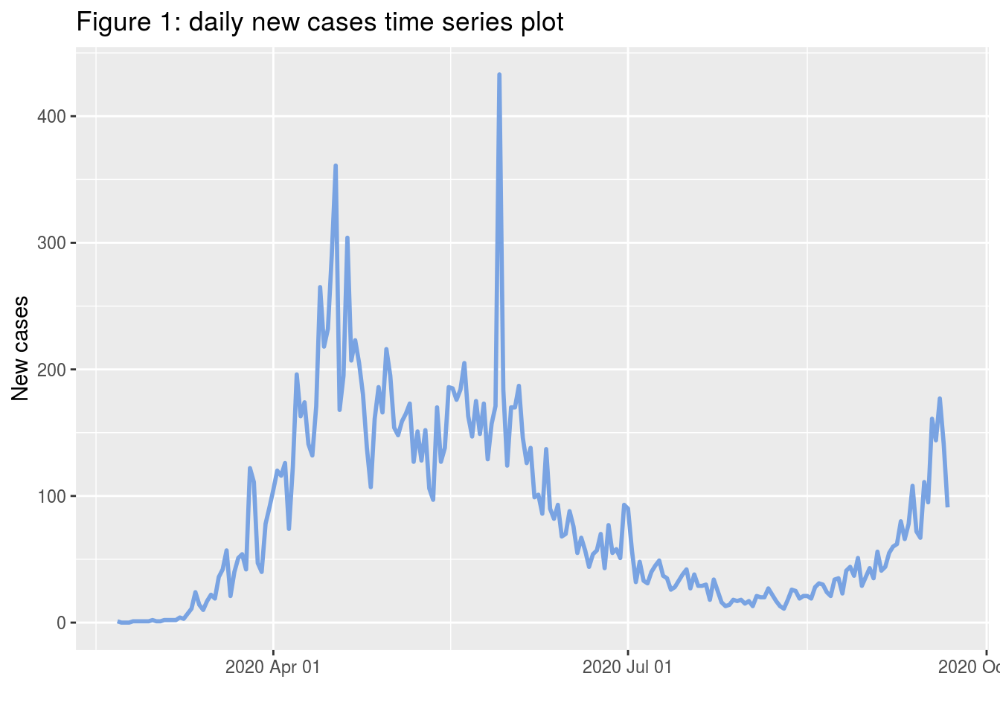
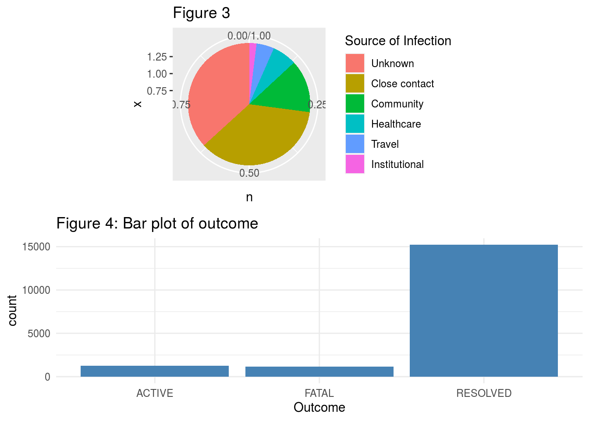

Abstract
Since in late December 2019, the whole world started to report outbreaks of coronavirus which causes an enormous impact on both people’s health and life. In this report, I demonstrated the trend of Toronto COVID-19 data, and displays its distribution among people’s age, gender, etc. The data set is composed of 17590 confirm and probable cases reported by Toronto Public Health, containing geographic & demographic information.
Introduction
The outbreak of Coronavirus disease has rapidly expanded, becoming a worldwide pandemic. As a resident in Toronto, I am interested in the trend of COIVD-19 daily new cases in data. In the report, my aim is to provide reader an initial insight of the data with plots and description. The data set contains clients’ age range, neighborhood name,source of infection and gender, etc. In order to investigate the infection trend in Toronto, I create a new data set which contains Date and daily new cases, based on number of cases reported in a day. In addition, there are some missing values existing in the data set.
Data & Graph Discussion
As we first glimpsed at the data set, it is evident that most variable are categorical and some missing values existing. I decided to delete entire row containing a missing values because they are less than 30% of total 17590 data. Although we may loss some information, this way of data process helping us to do a more accurate data analysis in the future.
## Rows: 17,872
## Columns: 18
## $ `_id` <int> 143647, 143648, 143649, 143650, 143651, 1436…
## $ Assigned_ID <int> 1, 2, 3, 4, 5, 6, 7, 8, 9, 10, 11, 12, 13, 1…
## $ `Outbreak Associated` <chr> "Sporadic", "Sporadic", "Sporadic", "Sporadi…
## $ `Age Group` <chr> "50 to 59 Years", "50 to 59 Years", "20 to 2…
## $ `Neighbourhood Name` <chr> "Willowdale East", "Willowdale East", "Parkw…
## $ FSA <chr> "M2N", "M2N", "M3A", "M4W", "M4W", "M2R", "M…
## $ `Source of Infection` <chr> "Travel", "Travel", "Travel", "Travel", "Tra…
## $ Classification <chr> "CONFIRMED", "CONFIRMED", "CONFIRMED", "CONF…
## $ `Episode Date` <chr> "2020-01-22", "2020-01-21", "2020-02-05", "2…
## $ `Reported Date` <chr> "2020-01-23", "2020-01-23", "2020-02-21", "2…
## $ `Client Gender` <chr> "FEMALE", "MALE", "FEMALE", "FEMALE", "MALE"…
## $ Outcome <chr> "RESOLVED", "RESOLVED", "RESOLVED", "RESOLVE…
## $ `Currently Hospitalized` <chr> "No", "No", "No", "No", "No", "No", "No", "N…
## $ `Currently in ICU` <chr> "No", "No", "No", "No", "No", "No", "No", "N…
## $ `Currently Intubated` <chr> "No", "No", "No", "No", "No", "No", "No", "N…
## $ `Ever Hospitalized` <chr> "No", "Yes", "No", "No", "No", "No", "No", "…
## $ `Ever in ICU` <chr> "No", "No", "No", "No", "No", "No", "No", "N…
## $ `Ever Intubated` <chr> "No", "No", "No", "No", "No", "No", "No", "N…In more details on client age groups and gender, there are total 9 age groups which are 19 years old and younger, between 20-29 years old, between 30-39 years old, between 40-49 years old, between 50-59 years old, between 60-69 years old,between 70-79 years old,between 80-89 years old, and 90 years old and older. And 9417 female clients, 8162 male clients and 11 transgender clients(Noted that I counted ‘other’ as TRANSGENDER as well).
## _id Assigned_ID Outbreak Associated Age Group
## Min. :143647 Min. : 1 Length:17590 20 to 29 Years:3027
## 1st Qu.:148151 1st Qu.: 4519 Class :character 50 to 59 Years:2706
## Median :152636 Median : 9038 Mode :character 30 to 39 Years:2701
## Mean :152611 Mean : 9056 40 to 49 Years:2388
## 3rd Qu.:157082 3rd Qu.:13561 60 to 69 Years:1795
## Max. :161518 Max. :18202 80 to 89 Years:1506
## (Other) :3467
## Neighbourhood Name FSA Source of Infection Classification
## Length:17590 Length:17590 Length:17590 Length:17590
## Class :character Class :character Class :character Class :character
## Mode :character Mode :character Mode :character Mode :character
##
##
##
##
## Episode Date Reported Date Client Gender Outcome
## Length:17590 Length:17590 FEMALE :9417 Length:17590
## Class :character Class :character MALE :8162 Class :character
## Mode :character Mode :character OTHER : 6 Mode :character
## TRANSGENDER: 5
##
##
##
## Currently Hospitalized Currently in ICU Currently Intubated
## Length:17590 Length:17590 Length:17590
## Class :character Class :character Class :character
## Mode :character Mode :character Mode :character
##
##
##
##
## Ever Hospitalized Ever in ICU Ever Intubated
## Length:17590 Length:17590 Length:17590
## Class :character Class :character Class :character
## Mode :character Mode :character Mode :character
##
##
##
## For the first plot, I plotted a time series plot of daily new cases in Toronto. To create this plot, I treated variable Reported Date as the data that infection confirmed data. Then I use count() function to count the cases in each day. Because there are some days missing on February, so I add those date to the data set with 0 confirmed case.

As we looking at the above time series plot, it demonstrated that there is a trend in the series. The data has a local maximum on April 27th(with 433 confirmed cases), 2020 and peaks at May 29th,2020(with 361 confirmed cases). Then the data goes down on late May. Number of daily new cases seems to be low and stable on July and August. however, it tends to go up again on September. This might be caused by people starting to go outside for some outdoor activities.
Next, let’s take a look at the bar plot of age group in the following. I observed that people in the age group 20-29 years old have the highest frequency, following by age group 30-39 years old and 50-59 years old. Also the red shaded area represents female, and green area represents male. From the plot, we can say that females from aged 20 to 59 tend to be more get infected.

The following tables are the count of Source of Infection and count of Outcomes.
| Source of Infection | n | Percent |
|---|---|---|
| Close contact | 6361 | 0.36 |
| Community | 2460 | 0.14 |
| Healthcare | 1137 | 0.06 |
| Institutional | 343 | 0.02 |
| Unknown | 6465 | 0.37 |
| Travel | 824 | 0.05 |
| Outcome | n | Percent |
|---|---|---|
| ACTIVE | 1237 | 0.07 |
| FATAL | 1143 | 0.06 |
| RESOLVED | 15210 | 0.86 |
The following are the pie chart of source of infection(on the left), and the bar plot on the right side corresponding to the age group. The pie chart displays that ‘close contact’ accounts for the most in know source, about 36%, and unknown source is about 37%. The thing surprised me is that most people who get infected in February and March are due to ‘travel’, and people getting infected recently are because they having close contact with other infected people. On the other hand, there is another thing observed from bar plot is that the fatal rate is approximately 6% and most people were recovered. Although the fatal rate is relatively low, the spreading rate of coronavirus is super high.

Next Step & Weakness
After an analysis of data insight, we can do a time series model to predict future new cases of infected people. But before that, we need to check if our series is stationary by using an unit root test. However, our weakness is also presenting. The way that we treated missing values might let our analysis loss some significant features. And we lack of some other variables that may be affected by COVID-19 in this data set, otherwise we could investigate in the impact under the pandemic of COVID-19.
References
Wickham et al., (2019). Welcome to the tidyverse. Journal of Open Source Software, 4(43), 1686, https://doi.org/10.21105/joss.01686
H. Wickham. ggplot2: Elegant Graphics for Data Analysis. Springer-Verlag New York, 2016.
Sharla Gelfand (2020). opendatatoronto: Access the City of Toronto Open Data Portal. https://sharlagelfand.github.io/opendatatoronto/, https://github.com/sharlagelfand/opendatatoronto/.
Baptiste Auguie (2017). gridExtra: Miscellaneous Functions for “Grid” Graphics. R package version 2.3.
Adrian Trapletti and Kurt Hornik (2019). tseries: Time Series Analysis and Computational Finance. R package version 0.10-47.
Hadley Wickham, Romain François, Lionel Henry and Kirill Müller (2020). dplyr: A Grammar of Data Manipulation. https://dplyr.tidyverse.org, https://github.com/tidyverse/dplyr.
Appendix
covid19.data <- show_package("https://open.toronto.ca/dataset/covid-19-cases-in-toronto/")
data.id <- covid19.data[["id"]]
data.resourse <- list_package_resources(data.id)
data <- data.resourse %>%
get_resource()
glimpse(data)#Missing values cleaning
data$`Age Group`<-as.factor(data$`Age Group`)
levels(data$`Age Group`) <- c("19 and younger","20 to 29 Years","30 to 39 Years","40 to 49 Years","50 to 59 Years","60 to 69 Years","70 to 79 Years","80 to 89 Years","90 and older",NA)
data$`Client Gender` <- as.factor(data$`Client Gender`)
levels(data$`Client Gender`) <- c("FEMALE","MALE","OTHER","TRANSGENDER",NA)
library(tidyverse)
data<-data %>% drop_na()
summary(data)#data$`Reported Date`<-as.factor(data$'Reported Date')
## Convert to date
#data$'Reported Date' <- as.Date(data$'Reported Date')
## Tabulate
#tab <- table(data$'Reported Date')
## Format
cases <-read.csv("cases.csv")
cases <- cases[31:244,2:3]
# cases <- data.frame(Date=format(as.Date(names(tab))),
# Frequency=as.vector(tab))
cases$Date<-as.Date(cases$Date)
ggplot(cases, aes(Date, Frequency)) + geom_line(col='#79a3e2',size=1) +
scale_x_date(date_labels = "%Y %b %d") + xlab("") + ylab("New cases")data$`Age Group` <- as.character(data$`Age Group`)
#data %>% count(`Age Group`)
# age.freq <- data.frame(table(data$`Age Group`))
# ggplot(data=age.freq, aes(x=Var1,y=Freq)) + geom_bar(stat="identity",fill='#41b3d5') + labs(title = "Bar plot of Age Group")+
# xlab("Age group") + ylab("Freq")# gender.freq <- data.frame(table(data$`Client Gender`))
# ggplot(data=gender.freq, aes(x=Var1, y=Freq)) +
# geom_bar(stat="identity", fill="steelblue")+
# geom_text(aes(label=Freq), vjust=1.6, color="white", size=3.5)+
# theme_minimal() + labs(title = "Bar plot of Age Group")+
# xlab("Gender") + ylab("Freq")
ggplot(data = data, aes(`Age Group`, ..count..)) + geom_bar(aes(fill = `Client Gender`))+ labs(title = "Bar plot of Age Group")data$`Source of Infection` <- as.factor(data$`Source of Infection`)
levels(data$`Source of Infection`) <- c("Close contact","Community","Healthcare","Institutional","Unknown","Unknown","Travel","Unknown")
Source.count <- count(data, `Source of Infection`)
agg_ord <- mutate(Source.count,
`Source of Infection` = reorder(`Source of Infection`, -n, sum))
Percent <-round(c(6361/17590,2460/17590,1137/17590,343/17590,6465/17590,824/17590),2)
agg_ord$Percent <- Percent
knitr::kable(agg_ord)
p1<-ggplot(data = agg_ord) +
geom_col(aes(x = 1, y=n, fill = `Source of Infection`), position = "fill") + coord_polar(theta = "y")#Fatal rate
p2<-ggplot(data = data, aes(Outcome, ..count..)) + geom_bar(fill="steelblue")+ labs(title = "Bar plot of outcome")+theme_minimal()
outcome.count <- count(data, Outcome)
outcome.count$Percent <- c(1237/17590,1143/17590,15210/17590)
knitr::kable(outcome.count,digits = 2)grid.arrange(p1, p2, nrow = 1)